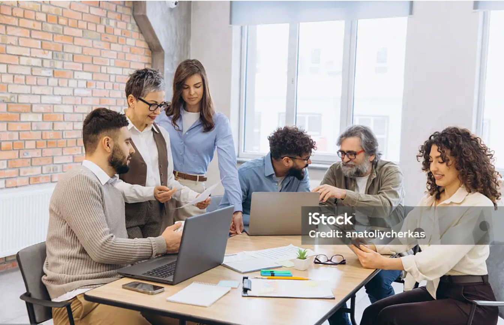
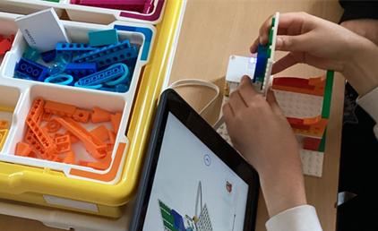
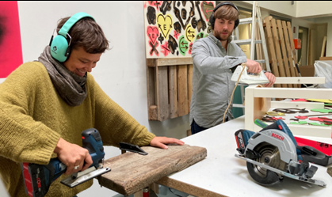

GEMEINNÜTZIG · KÖLN · SEIT 1985
Gemeinsam
Perspektiven
schaffen
Die eva-gGmbH steht für nachhaltige Stadtentwicklung mit sozialem Herz. Wir bringen Menschen in Köln zusammen, fördern Bildung, Qualifizierung und Teilhabe und schaffen echte Perspektiven – für eine starke und lebenswerte Stadt.
Angebote
Maßnahmen, Projekte und Repair Café
Zusammen mit dem Jobcenter und der Agentur für Arbeit Köln bieten wir Maßnahmen zur Beratung und Qualifizierung sowie Möglichkeiten für Fachpraktika und Arbeitsgelegenheiten. Wir vermitteln Arbeit suchende Menschen nachhaltig in den Arbeitsmarkt. In unseren Berufsfelderkungen unterstützen wir junge Menschen dabei, sich frühzeitig beruflich zu orientieren. In unseren Angeboten ermöglichen und fördern wir die Zusammenarbeit und den Dialog von Menschen aller Altersstufen und Schichten, Religionen und Kulturen. Unsere Angebote umfassen dabei auch Themen wie Ökologie und Nachhaltigkeit, z. B. in unserer kostenlosen Offenen Werkstatt für Re- und Upcyclinjg. Alle Angebote sind barrierearm oder -frei.

Campus: Arbeit
Mit Campus: Arbeit stellen sich in Arbeitsvermittlung und Bewerbungscoaching langjährig erfahrene Partner an Ihre Seite.
Mehr erfahren →Kölner Jugendlotsen
Im Rahmen des Projektes Kölner Jugendlotsen stehen die Teilnehmenden mit ihren individuellen persönlichen und beruflichen Zielen, Kompetenzen, Potenzialen und Bedarfen im Mittelpunkt.
Mehr erfahren →
Berufsfelderkundungen
Deine Zukunft. Dein Beruf. Entdecke, was in dir steckt!
Mehr erfahren →
ATI – Ankommen, Teilhaben, Integrieren
ATI – Ankommen-Teilhaben-Integrieren ist ein Angebot im Rahmen des ESF-Programms EhAP Plus mit dem Ziel, die Lebenssituation von armutsgefährdeten und von sozialer Ausgrenzung bedrohten Personen zu verbessern. Insbesondere richtet es sich an besonders benachteiligte neuzugewanderte Unionsbürgerinnen und -bürger und deren Kinder unter 18 Jahren. Wir erreichen dieses Ziel durch Ansprache, Beratung und Begleitung.
Mehr erfahren →
Berufliche Rehabilitation
Unsere Maßnahme zur beruflichen Rehabilitation unterstützt Menschen dabei, ihren Weg in Arbeit zu finden – oder nach einer Unterbrechung erfolgreich zurückzukehren.
Mehr erfahren →
Ehrenwerk
Gemeinsam Altes aufmöbeln – in unserem Repair Café
Mehr erfahren →AGH-Stellen
Die eva-gGmbH bietet im Auftrag des Jobcenters Köln, auf Grundlage des §16 SGB II, erwerbsfähigen Bezieherinnen und Beziehern von Bürgergeld die Möglichkeit, durch Beschäftigungsmaßnahmen ihre Beschäftigungsfähigkeit zu erhöhen und in der Perspektive ihre Chancen auf Integration in den ersten Arbeitsmarkt zu verbessern.
Mehr erfahren →Dienstleistungen
Handwerkerleistungen, Fahrradwerkstatt und Raumvermietung
Ob Sie professionelle Arbeiten aus verschiedenen Gewerken, einen Check für Ihr Fahrrad oder Räumlichkeiten für Arbeit oder Party suchen – entdecken Sie unsere Serviceangebote! Wir unterstützen Sie und erleichtern Ihnen den Alltag.

Es gehört zu unserem Selbstverständnis, die Welt ein wenig besser machen zu wollen. Ein zentraler Bestandteil unserer Maßnahmen und Angebote zur beruflichen und gesellschaftlichen Integration ist eine fachliche und allgemeinbildende Qualifizierung der Teilnehmer in Sinne des lebenslangen Lernens. Wir sehen die Anforderungen und Erwartungen aller Akteure, Personen und Gruppen, die mit uns verbunden sind, als wichtigen Orientierungspunkt, an dem wir unser Handeln und die angestrebten Ergebnisse ausrichten und umsetzen.
Was gerade bei eva passiert
Neuigkeiten, Projekte, Veranstaltungen und Einblicke in unsere Arbeit.
Mehr erfahrenGemeinsam mehr möglich machen
Mit Ihrer Spende unterstützen Sie unsere regionalen Angebote für die berufliche und soziale Integration von Jugendlichen und Erwachsenen. Jede Zuwendung – ob Geld- oder Sachspende – hilft uns, Projekte in der Nachbarschaft und kostenlose Angebote wie unser Repair Café zu ermöglichen.
Ihr Einstieg bei uns
Schauen Sie doch mal, was es bei uns gerade an offenen Stellen gibt. Egal, ob Sie sich beruflich verändern möchten oder einfach neugierig sind, welche Möglichkeiten es bei uns gibt: Hier sind Sie genau richtig. Werden Sie Teil eines Teams, das Menschen unterstützt, Zukunft gestaltet und gemeinsam wächst!